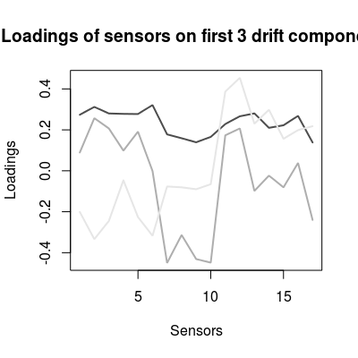

The dataset contains statistics on a multi-variate drift sub-space for the long-term UNMIAN dataset of 1000 samples over 8 classes.
The subspace was evaluated via common principal component analysis (power algorithm). Only three classes (analytes at maximum concentration) are used in the computation for more accurate estimation. The importance of the drift components is computed as a projected variance of sensor array data of the given three classes onto the components.
The datasets contains four variables:
dspace |
A square 17 x 17 matrix of the
drift subspace. Columns are drift component vectors. |
ndvar |
A vector of length 17 with the
importance of the components. |
centered |
Boolean indicating whether the UNIMAN data were centered before the computation. |
scaled |
Boolean indicating whether the UNIMAN data were scaled before the computation. |
Warning message: data set ‘UNIMANdnoise’ not foundList of 4 $ centered: logi TRUE $ dspace : num [1:17, 1:17] 0.274 0.312 0.28 0.278 0.278 ... $ ndvar : num [1:17] 0.86425 0.06216 0.04846 0.00693 0.00647 ... $ scaled : logi TRUE[1] 17 17[1] 0.864246632 0.062158036 0.048459565 0.006925524 0.006465561 0.005053250barplot(UNIMANdnoise$ndvar, names.arg=1:length(UNIMANdnoise$ndvar), main="Importance of drift components")
# comp. 1 dominates, # comp. 1-3 dominate over the rest loadings <- UNIMANdnoise$dspace col <- grey.colors(3, start=0.3, end=0.9) matplot(loadings[, 1:3], t='l', col=col, lwd=2, lty=1, xlab="Sensors", ylab="Loadings", main="Loadings of sensors on first 3 drift components")# sensors 7, 8, 9, 17 seem to be less drifty
DriftNoiseClass